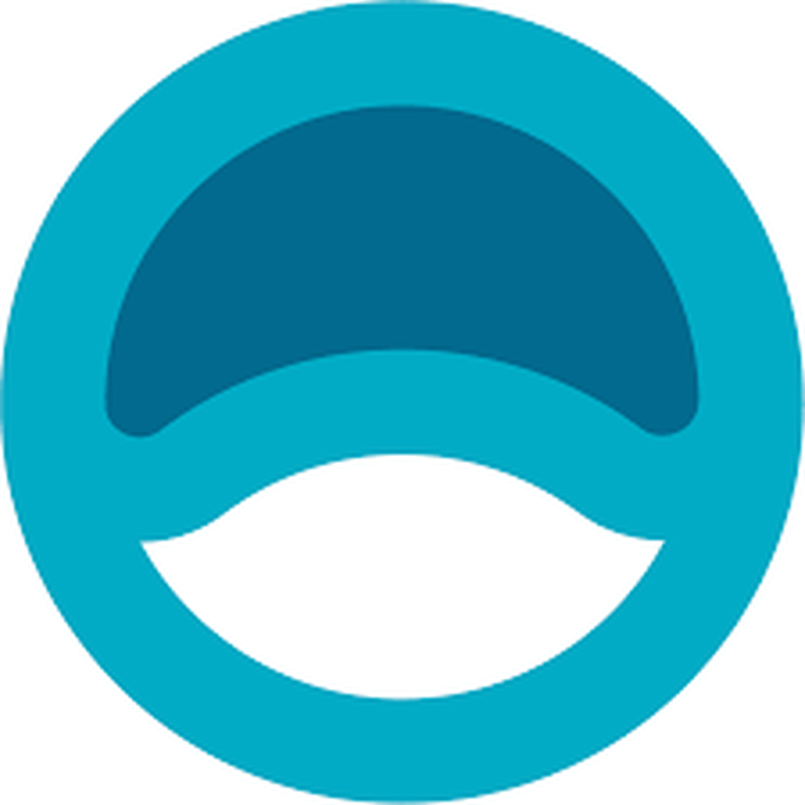
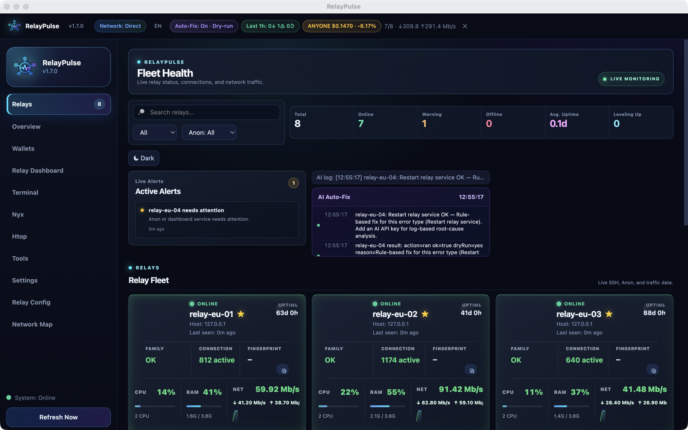
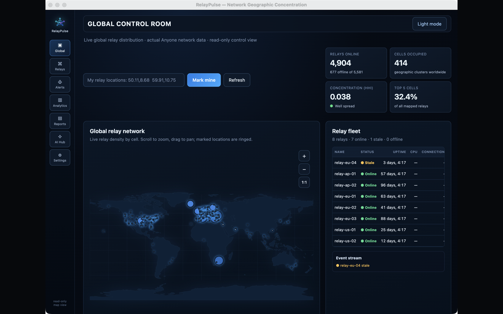
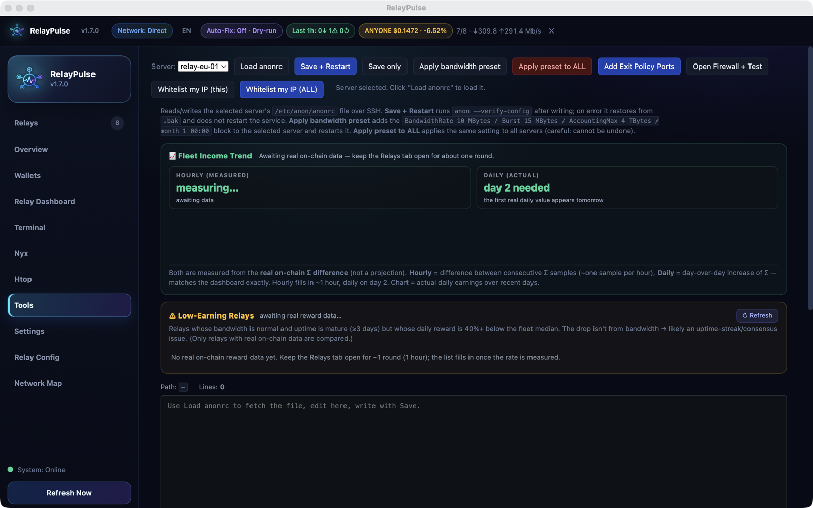

RelayPulseReach every Linux server you run over SSH without opening a terminal. Real-time health monitoring, alerts that fire on real outages, and AI-powered auto-fix — across your whole fleet, from one dashboard. On Mac, iPhone, Android, Windows and Linux.

Forty seconds through the fleet dashboard: online, warning and offline relays, side by side.
Recorded with demo data — no real fleet is shown.
CPU, RAM, disk, bandwidth, connections and anon service status polled per relay — with flap dampening so a single blip doesn't page you.
When a relay goes offline or its service dies, the app can diagnose and run the fix automatically — restart services, clear stuck states, and more.
For node operators: hourly and daily on-chain earnings per machine, plus a detector that flags hosts falling behind the fleet median.
Collect fingerprints across your fleet and apply a correct, up-to-date MyFamily line to every relay in one click.
Scan your fleet for fail2ban status and SSH exposure, then harden risky relays against SSH-flood and brute-force attacks in bulk.
See which relays are close to leveling up a reward tier — and which ones you really don't want to go offline this week.


RelayPulse for iPhone is on the App Store; the Mac version is in Apple's review. One purchase covers both — buy it once, use it on your Mac and your phone.
The purchase belongs to your Apple Account, not to one device, so it unlocks RelayPulse on both your iPhone and your Mac. On the device you did not buy on:
Still locked? Check that both devices use the same Apple Account for App Store purchases (iPhone: Settings → your name → Media & Purchases; Mac: App Store → Account), then tap Restore again. Nothing is charged twice — restoring never buys anything.
Want to try the Mac version before release? Email me and I will send you a TestFlight invite.
Windows, Linux and Android are available today — installs in under a minute.
Android: the app isn't on Google Play yet, so Play Protect shows "App blocked to protect your device". Tap Install anyway (the small text above "Got it"). Your relays move over with Settings → Export for phone on the desktop (called "Export for iPhone…" up to 1.8.17), then Import fleet file on the phone.
Windows, Linux, Mac, iPhone and Android all read your servers through the RelayPulse HTTPS agent on port 19191. If a firewall blocks it, the desktop quietly falls back to SSH — but a phone has no SSH login, so it shows "Timed out".
1. Open it on every server (as root):
ufw allow 19191/tcp2. Open it at your VPS provider too. Many providers have a firewall in their web panel that sits
in front of the server. Allow incoming TCP 19191 there as well — ufw can't change that one.
3. Check it. In the app, the server card turns green and shows the agent as the source.
Is it safe to open? Yes. The agent answers only requests that carry that server's own random token, it is read-only (CPU, memory, traffic and service status), it cannot run commands, and the apps pin its certificate on first contact so the token is never sent to anyone else.